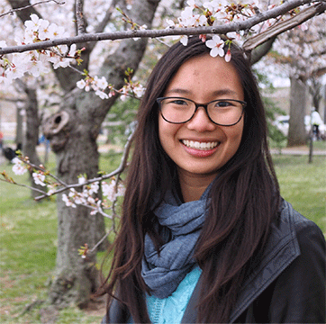
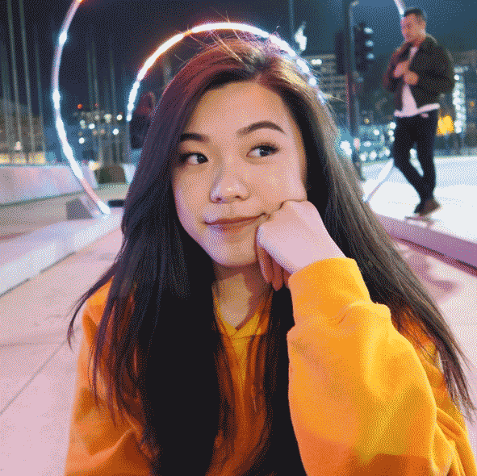

Who We Are

About Cindy
I’m a third-year student double majoring in design and cognitive science (neuroscience) at the University of California, Davis. Born and raised in the Silicon Valley, I’ve always had an immense appreciation for the intersection between technology,
science, and design. As cheesy as it sounds, I couldn’t escape my love for design even if I tried (and to be completely honest, I have tried!). Anyway, I have more than just one love for design! The most valuable things in my life aside from
design (and cognitive science, of course) include learning by traveling to places all over the world, de-stressing by spending quality time with people I love and care for, and experimenting by involving myself in new experiences.
Email:
cicheung@ucdavis.edu
Links:
Portfolio
Instagram

About Esther
Esther is a third-year student double majoring in Design and Communications at UC Davis. She is 20 years old and was born and raised in the Bay Area. Esther is set to graduate in Spring 2018 with an emphasis in 2D motion graphics and graphic design. Growing up, Esther had a passion for both videography and design, particularly with capturing real-time experiences and enhancing stories with graphic elements. To Esther, a community that is not only thriving with creativity but also diversity is something that is very personal and crucial in her growth as a designer. Esther is always welcome to new friendships and collaborations... so don't be shy to reach out!
Email:
estlin@ucdavis.edu
Links:
Portfolio
Instagram